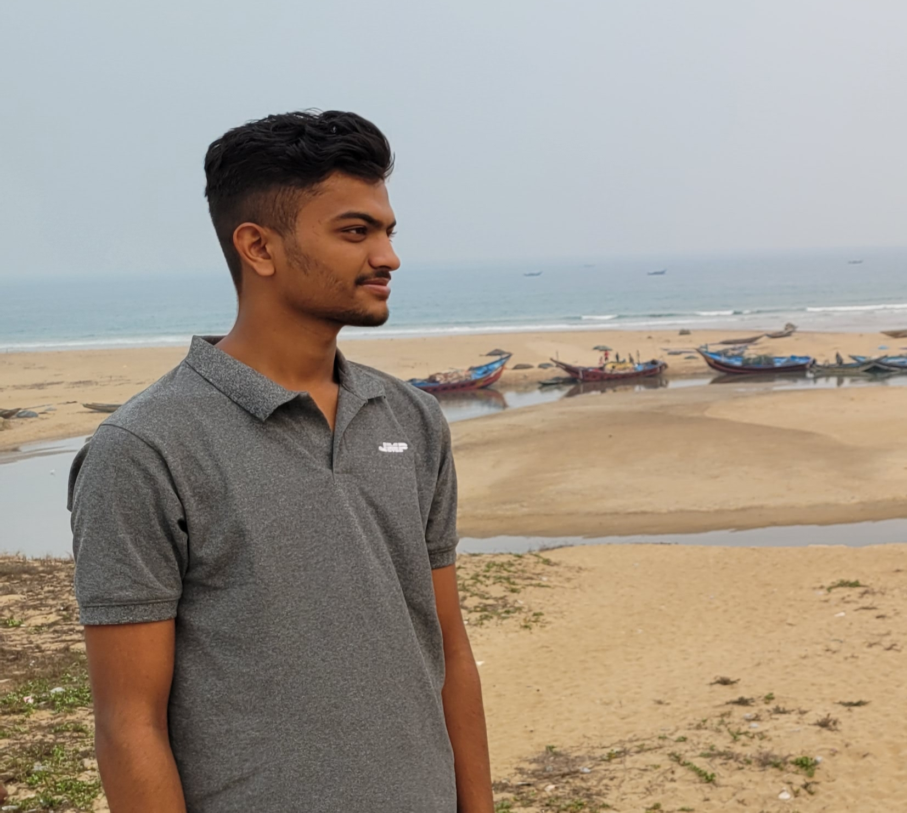

HEY THERE!! WELCOME TO MY PAGE :)

Hii, I'm Rudra Pratap Padhi, currently pursuing my Bachelor of Technology degree in Veer Surendra Sai University Of Technology, Burla. I believe on developing self professional skills and learning new things all the time.

Having hobbies and interests outside of the workplace allows you to explore your passions and become a more well-rounded person. I love to play and watch football and cricket and I read magazine articles.

Many technical skills require training and experience to master. They are also typically a type of hard skill. Hard skills are those that can be taught in a classroom, and can be defined, evaluated, and measured